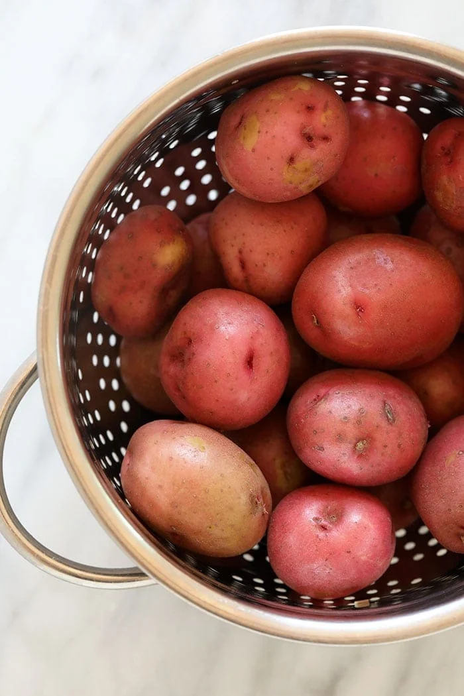
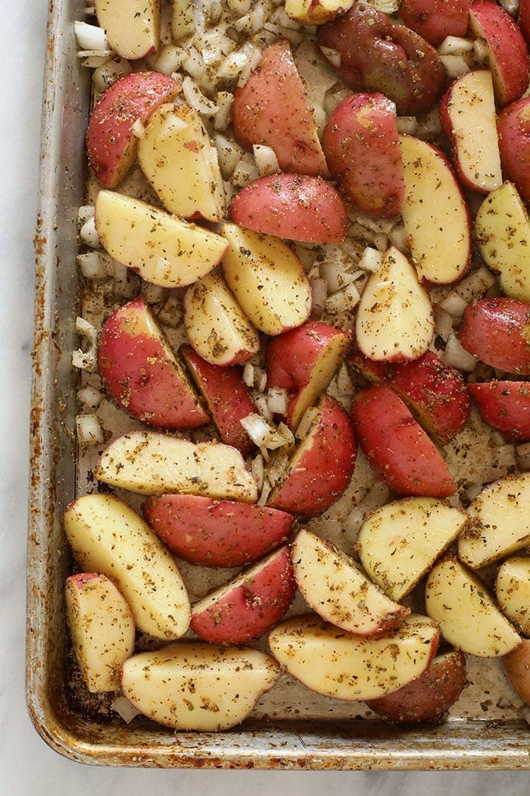

Potato Recipe | Ultimate Meal Prep Guide

Author by Linley Hanson Approx time: 1 Hour
Welcome to the guide of making potatoes for your next Meal Prep
Look at Required materials below
- Red potatoes cut into smaller sizes
- Onions (but not necessary, just for extra flavor)
- Olive oil - to make it nice and crispy
- Spices needed
- salt
- pepper
- garlic powder
- dired oregano
- chili powder
Instructions, Step by Step Guide
- Wash chunk potatoes and slice them
- Place slices potatoes on baking sheet
- Mix seasoning and coat potatoes, also with with olive oil
- Mix the potatoes together until all are evenly coated
- Roast at 425 Fahrenheit for 30-40 minutes, in between 15 minutes, make sure to flip potatoes
Image of finished recipe

Thank you for reading & Enjoy!